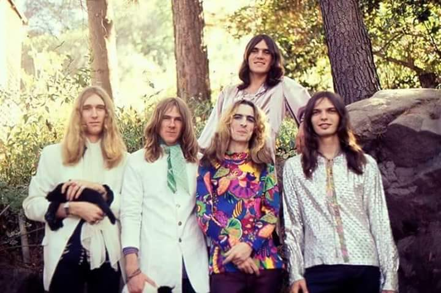

Hallo verden!
Alice Cooper
For det var et band, ikke en soloartist som det ble etterhvert
Hva var det med dette bandet som var så bra?
- Sterk, lett gjenkjennelig vokal
- Spennende tekster
- Stilig rock
- Nytt og fasinerende image
Hvem var med i dette bandet?
- Vince Furnier aka Alice Cooper, sang
- Michael Bruce, gitar
- Glen Buxton, gitar
- Dennis Dunaway, bass
- Neal Smith, trommer
Alice Cooper på wikipedia
